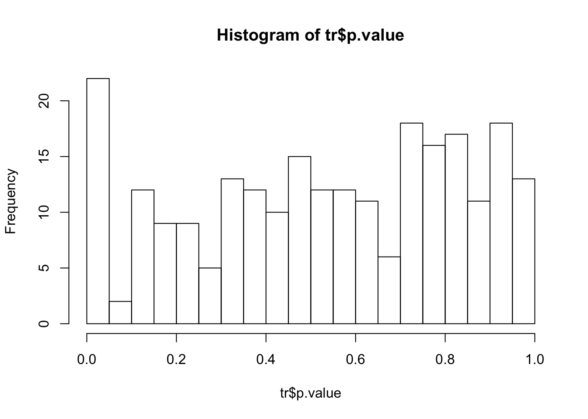

最近设计了一组代谢组学实验，因为用到动物所以需要学校动物保护委员会的许可，完成了一系列理论学习与实验室参观后，主管人员要求提供预实验结果与功效分析来确定动物数量。这个要求就诡异了，组学实验同时测上千个指标，这功效分析根本无从谈起。但因为是必填项，硬着头皮去查了下资料，如果是代谢组学数据，确实基本没人提功效分析，有也是针对特定测量值。然而，蛋白质组学跟基因组学都曾经讨论过这个问题，这里我大体总结下。
功效分析
常规功效分析至少需要显著性水平、组内标准差、组间差异、功效及检验方式来确定样本数。其实说白了就是知道想看到一个显著差异所需要的最小样本数，如果不能达到这个数，那么你这个实验基本可以当成白干了。功效分析跟显著性分析关注点并不一样，前者关心看到的差异真不真，后者关心这个差异存不存在。一般而言，控制实验都能看到差异，所以关心这个差异靠不靠谱其实对实验设计很重要，而具体表现就是样本数。样本越大越容易看出细微差异，如果样本数固定，那么可以通过功效分析测定哪些差异靠谱。从上面我们可以总结出两点：
- 功效分析需要显著性水平的设定
- 功效分析是知道多个求一个，这个数可以是样本数，也可以是差异本身
组学实验
组学实验最大问题就是同时测定两组样本的多维属性，这里面显著性水平要考虑整体错误发现率。同时，功效分析对于单一变量考察是没什么问题的，但如果你同时测量多个变量，那么这个样本数对不同变量应该是不一样的。你需要对结果进行筛选，而这个筛选反过来影响样本数。此外，组学实验中存在大量白噪音，不考虑这个问题的功效分析也是有问题的。我们通过下面的例子来说明。
示例
library(BiocParallel)
library(xcms)
## Load 6 of the CDF files from the faahKO
cdf_files <- dir(system.file("cdf", package = "faahKO"), recursive = TRUE,
full.names = TRUE)
## Define the sample grouping.
s_groups <- rep("KO", length(cdf_files))
s_groups[grep(cdf_files, pattern = "WT")] <- "WT"
## Define a data.frame that will be used as phenodata
pheno <- data.frame(sample_name = sub(basename(cdf_files), pattern = ".CDF",
replacement = "", fixed = TRUE),
sample_group = s_groups, stringsAsFactors = FALSE)
## Read the data.
raw_data <- readMSData2(cdf_files, pdata = new("NAnnotatedDataFrame", pheno))
## Find peaks
cwp <- CentWaveParam(snthresh = 20, noise = 1000)
xod <- findChromPeaks(raw_data, param = cwp)
## Doing the obiwarp alignment using the default settings.
xod <- adjustRtime(xod, param = ObiwarpParam())
## Define the PeakDensityParam
pdp <- PeakDensityParam(sampleGroups = pData(xod)$sample_group,
maxFeatures = 300, minFraction = 0.3)
## Group the peaks
xod <- groupChromPeaks(xod, param = pdp)
## Fill in peaks with default settings. Settings can be adjusted by passing
## a FillChromPeaksParam object to the method.
xod <- fillChromPeaks(xod)
## Get the data matrix
data <- featureValues(xod, value = "into")
## Get the complete cases
data0 <- data[complete.cases(data),]
dim(data0)## [1] 243 12在上面的示例中，两组数据每组样本是6个，共提取出了243个峰的完整数据，那么，此时的功效分析首先要确定整体错误发现率。
library(genefilter)
## Get group infomation
lv <- as.factor(pData(xod)[,2])
## Get median difference and standard deviation in one group
tr <- rowttests(data0,lv)
## Estimates the proportion of true null p-values, for FDR
ts <- mean(abs(tr$statistic),na.rm = T)
library(qvalue)
pi0 <- pi0est(tr$p.value)$pi0
hist(tr$p.value,breaks = 20)
pi0## [1] 1从上面我们可以看出这一组多重比较数据的p值分布符合均匀分布, 道理上说这组数据基本可以看作没有多少差异，但直方图却显示应该存在一些有显著差异的峰。那么我们基于当前数据可以进行一下功效分析，看看究竟差异多大可以认为是真的。
## Get median difference and standard deviation in one group
dm <- median(abs(tr$dm))
sd <- median(rowSds(data0[,1:6]))
## Get the difference
library(ssize)
## Get the differences number fitting the power in this DoE
power.t.test.FDR(n = 6, sd = sd, FDR.level = 0.05,power = 0.8, pi0= 1)##
## Two-sample t test power calculation
##
## n = 6
## delta = 6149021
## sd = 366486.2
## FDR.level = 0.05
## power = 0.8
## alternative = two.sided
##
## NOTE: n is number in *each* groupsum(tr$dm> 6149021)## [1] 1## Get the sample numbers fitting the power and 50% differences true in this DoE
power.t.test.FDR(delta = dm, sd = sd, FDR.level = 0.05,power = 0.8, pi0= 1)##
## Two-sample t test power calculation
##
## n = 9675.235
## delta = 136197.7
## sd = 366486.2
## FDR.level = 0.05
## power = 0.8
## alternative = two.sided
##
## NOTE: n is number in *each* group这样我们大体可以认为，在当前实验设计下，只有1个峰的显著差异是靠谱的。同理，也可以计算出如果想看到50%的差异为真，我们每组需要9675个样本。
同时，如果不考虑错误发现率的结果则是：
power.t.test(n = 6, sd = sd, sig.level = 0.05,power = 0.8)##
## Two-sample t test power calculation
##
## n = 6
## delta = 658041.6
## sd = 366486.2
## sig.level = 0.05
## power = 0.8
## alternative = two.sided
##
## NOTE: n is number in *each* groupsum(tr$dm>497799.2,na.rm = T)## [1] 27power.t.test(delta = dm, sd = sd, sig.level = 0.05,power = 0.8)##
## Two-sample t test power calculation
##
## n = 114.6297
## delta = 136197.7
## sd = 366486.2
## sig.level = 0.05
## power = 0.8
## alternative = two.sided
##
## NOTE: n is number in *each* group当前实验可以发现27个差异是靠谱的，或者需要每组115个样品才能表示出一半的差异是真的。
产生上述问题的本质在于高通量数据的错误发现率控制降低了发现差异的p值，所以更少的差异是真的。同时如果严格控制错误发现率，那么所需要的样本数会非常多。此外，这个结果提示我们如果样本数不多，那么你其实只能对那些差异很大的峰给予信心。
但上面的计算有一个最大的问题，就是组内标准差其实差异很大，此时应考虑每个样本的情况:
power <- 0.8
alpha <- 0.05
pv <- tr$p.value
df <- cbind.data.frame(tr$dm,rowSds(data0[,1:6]),alpha,pv)
df <- df[df$pv<0.05,]
rs <- vector()
for (i in c(1:nrow(df))){
r <- power.t.test.FDR(delta = abs(df[,1][i]), sd = df[,2][i], FDR.level = 0.05,power = power, pi0 = 1)
rs[i] <- r$n
}
sum(rs<6)## [1] 0这样，我们发现会有0个差异是真正显著的，这比使用平均样本控制得到的少，说明单个去看其实更难找到真正有差异的峰。
功效分析不一定会得到跟FDR控制更少的峰，而且FDR控制的算法设计里实际也考虑了类似的过程，但是从全局分析的功效分析对于实验设计非常有用。当你进行了一组预实验，功效分析可以告诉你结论中多少峰是靠谱的，如果一个都没有，那么就增加样本量吧。如果你的研究目的是至少发现一个峰是靠谱的，也就是生物标记物研究，那么此时功效分析所需的样本数最好再多一个，否则结论可能无意义。
下面就把上述过程整合成一个函数，输入提取好的MSnExp对象与功效值、p值与q值的阈值就可以返回一个满足条件的峰列表，这个函数只对两组数据对比有用，也仅适合 xcms 3 的新对象类型，不过稍微修改就可以推广到其他检验方式了。这个峰列表是进一步研究的基础，如果不严格考察，后面的分析大概率得到错误结论。在检验模型的选择上，如果你的数据存在技术重复或需要线性混合模型求解，这里面的功效分析会比较不同，需要你自己设计算法求解，这里不展开说了，大概是个生统硕士论文的工作量。
library(genefilter)
library(qvalue)
library(ssize)
getrealpeaks <- function(xod, power = 0.8, pt = 0.05, qt = 0.05, n = 6){
data <- featureValues(xod, value = "into")
idx <- complete.cases(data)
data1 <- featureDefinitions(xod)
mz <- data1$mzmed[idx]
rt <- data1$rtmed[idx]
lv <- as.factor(pData(xod)[,2])
data0 <- data[idx,]
tr <- rowttests(data0,lv)
qvalue <- qvalue(tr$p.value)
pi0 <- qvalue$pi0
alpha <- pt
df <- cbind.data.frame(diff = tr$dm,sd = rowSds(data0[,1:n]),p = tr$p.value,qvalue = qvalue$qvalues,mz,rt,data0)
df <- df[df$p < pt,]
rs <- vector()
for (i in c(1:nrow(df))){
r <- power.t.test.FDR(delta = abs(df[,1][i]), sd = df[,2][i], FDR.level = qt,power = power, pi0 = pi0)
rs[i] <- r$n
}
df <- cbind(n = rs,df)
df <- df[df$n < n & df$qvalue<qt,]
return(df)
}
getrealpeaks(xod = xod)## [1] n diff sd p qvalue mz rt
## [8] ko15.CDF ko16.CDF ko18.CDF ko19.CDF ko21.CDF ko22.CDF wt15.CDF
## [15] wt16.CDF wt18.CDF wt19.CDF wt21.CDF wt22.CDF
## <0 rows> (or 0-length row.names)